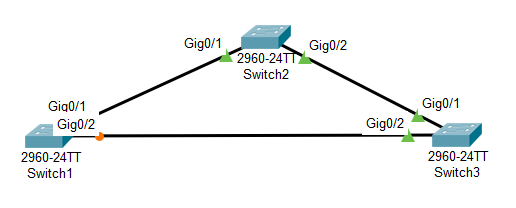

Het Spanning Tree Protocol zorgt ervoor dat redundante verbindingen in een netwerk geen problemen veroorzaken.
Netwerken hebben vaak meerdere verbindingen tussen switches, voor meer snelheid en meer betrouwbaarheid. Zonder STP levert dat een broadcast storm op: frames blijven eindeloos rondcirkelen en het netwerk wordt onbruikbaar.
Zodra STP meerdere paden naar hetzelfde netwerksegment ziet, blokkeert het een of meer poorten. Er blijft dan nog één actief pad over tussen twee punten.

Valt een actieve link weg, dan zet STP een geblokkeerde reserveverbinding terug open.
Het netwerk van Disney's Yacht & Beach Club Resorts lag er een tijd uit door een loop waar het Spanning Tree Protocol niet op ingesteld stond.